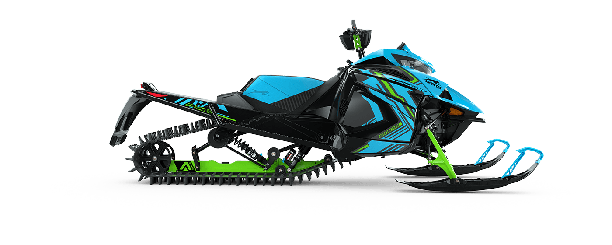

Choosing a Brand
Picking a brand of snowmobile may be tricky. With so many new advancements in technology and the way that each snowmobile brand competes, you cannot really make a wrong choice. With all that being said, different brands may fit your riding style a little better than others. Lets take a look.

Polaris
Polaris is a great snowmobile manufacturer with powerful, reliable engines, and many models to choose from. Their mountain sleds are compact and robust, and deliver plenty of power to the track. They come with four different engine options, depending on the model, being; Patriot Boost, Patriot 9R, 850 Patriot, and 650 Patriot. Polaris Snowmobiles are known to be able to keep a steady line while side-hilling, allowing the rider to maintain better control of the machine. If you like to catch some air, a Polaris is great for stability and control, even mid-jump. You cannot go wrong with a Polaris Snowmobile.

Ski Doo
Ski doo has dominated the snowmobile game for a while. With constant breakthroughs of technology and power, they have always been a step ahead in innovation. There are plenty of models to fit any of your needs, from trail riding, to mountain climbing. With their new, factory built 850 Turbo R engine, there is nowhere you can not go. With a recently new platform, It makes controlling that sidehill so much easier. With the narrower stance, it allows you to be in complete control under those gnarly conditions. You will not regret buying a Ski doo snowmobile.

Arctic Cat
Arctic Cat is another great snowmobile brand. With slightly fewer options, Arctic Cat really dials in with what they have. With newer technologies and a one-of-a-kind rear mono rail system, They can keep up in any group. New for this year, they have produced a more powerful, and quicker engine than ever before at Arctic Cat.
Polaris
Polaris is a great snowmobile manufacturer with powerful, reliable engines, and many models to choose from. Their mountain sleds are compact and robust, and deliver plenty of power to the track. They come with four different engine options, depending on the model, being; Patriot Boost, Patriot 9R, 850 Patriot, and 650 Patriot. Polaris Snowmobiles are known to be able to keep a steady line while side-hilling, allowing the rider to maintain better control of the machine. If you like to catch some air, a Polaris is great for stability and control, even mid-jump. You cannot go wrong with a Polaris Snowmobile.
Ski Doo
Ski doo has dominated the snowmobile game for a while. With constant breakthroughs of technology and power, they have always been a step ahead in innovation. There are plenty of models to fit any of your needs, from trail riding, to mountain climbing. With their new, factory built 850 Turbo R engine, there is nowhere you can not go. With a recently new platform, It makes controlling that sidehill so much easier. With the narrower stance, it allows you to be in complete control under those gnarly conditions. You will not regret buying a Ski doo snowmobile.
Arctic Cat
Arctic Cat is another great snowmobile brand. With slightly fewer options, Arctic Cat really dials in with what they have. With newer technologies and a one-of-a-kind rear mono rail system, They can keep up in any group. New for this year, they have produced a more powerful, and quicker engine than ever before at Arctic Cat.